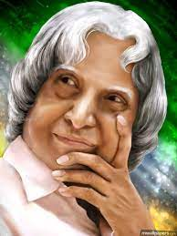

Dr.A.P.J.Abdul Kalam

The Missile Man- Dr.A.P.J.Abdul Kalam
- Full Name:Avul Pakir Jainulabdeen Abdul Kalam
- Born: 15 October 1931, Rameswaram
- Died: 27 July 2015, Shillong
- Previous offices: President of India (2002-2007), Principal Scientific Adviser to the Government of India (1999-2001
- Awards: Bharat Ratna, Veer Savarkar Award, Hoover Medal, more
- Education: Madras Institute of Technology, Anna University (1955-1957)